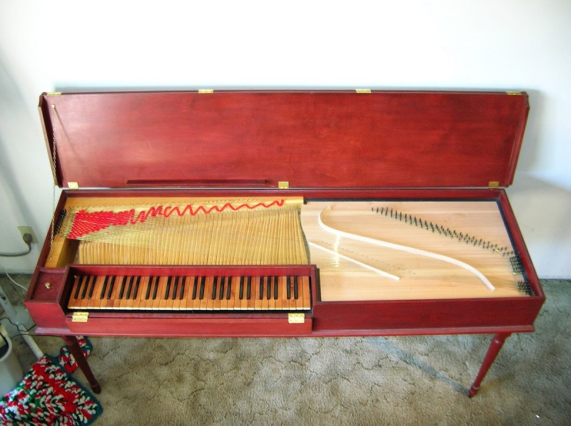
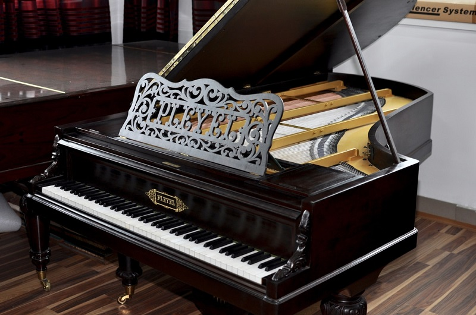

Od Klawikordu do Fortepianu
Fortepian wykształcił się z klawikordu. Twórcą instrumentu, który był protoplastą współczesnego fortepianu, był Bartolomeo Cristofori. W źródłach podaje się różne daty pojawienia się tego wynalazku, pomiędzy latami 1689 i 1709.
Ewolucja i rozwój
- Wynalazek Cristoforiego - Włoski konstruktor, pracujący na dworze księcia we Florencji, skonstruował pierwszy model, w którym klawisze poruszały młoteczki uderzające w struny, co umożliwiło zmianę głośności w zależności od nacisku klawisza
- Pierwsze udoskonalenia – Gottfried Silbermann z Niemiec wprowadził system odłączania tłumika, a także ulepszył mechanizm, co zwróciło uwagę takich kompozytorów jak Jan Sebastian Bach.
- Rozwój w XIX wieku – Wzmacnianie konstrukcji za pomocą żeliwnej ramy, wprowadzenie mechanizmu podwójnej repetycji (przez Sebastiena Erarda) i powiększenie klawiatury znacząco wpłynęły na brzmienie, skalę i możliwości techniczne instrumentu, co z kolei umożliwiło tworzenie bardziej złożonych kompozycji przez Beethovena, Chopina czy Liszta.
- Popularność i światowy rozwój: – Z czasem fortepian zyskał ogromną popularność, stając się symbolem muzyki i odzwierciedlając zmiany kulturowe. Zaczęto produkować go na skalę przemysłową, m.in. w USA, gdzie firma Steinway i inne odegrały kluczową rolę w dalszym rozwoju instrumentu.
Na poniższym obrazie, możesz zobaczyć jak wygląda fortepian historyczny (pleyel 1886)
